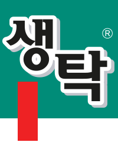

강서 도매소불러오는 중...
-
-
-
거래처 현황 지도
현재 등록된 모든 거래처의 위치를 지도로 확인 및 T맵 길찾기 연동 됩니다.
상태: 대시보드 불러오는 중...
Made with ☕ by Byungjun & Gemini
거래처명을(를)
정말 삭제하시겠습니까?
삭제하면 복구할 수 없으며,
스프레드시트에서도 즉시 지워집니다.
클릭 시 해당 기사로 이동합니다.🔗